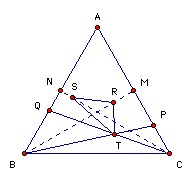
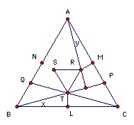

ABC is an equilateral triangle. M is the midpoint of AC and N is the midpoint of AB. P lies on the segment MC, and Q lies on the segment NB. R is the orthocenter of ABP and S is the orthocenter of ACQ. The lines BP and CQ meet at T. Find all possible values for angle BCQ such that RST is equilateral.
Answer
15o.
Solution

Suppose CP < BQ. Since R is the intersection of BM and the perpendicular from P to AB, and S is the intersection of CN and the perpendicular from Q to AC, we have MR > NS. Hence (treating BC as horizontal), R is below S. But T must be to the right of the midpoint of BC. Hence T is to the right of the perpendicular bisector of RS, so RST cannot be equilateral. Contradiction. Similarly if CP > BQ. So CP = BQ.

Let L be the midpoint of BC. Put ∠CBP = x and ∠RAM = y. So RM = AM tan y, TL = BL tan x = AM tan x. But ∠APB = 60o + x, so y = 30o - x. So if x ≠ 15o, then TL ≠ RM. However, RST equilateral implies TL = RM, so x and hence also ∠BCQ = 15o.

© John Scholes
jscholes@kalva.demon.co.uk
28 Nov 2003
Last corrected/updated 28 Nov 03